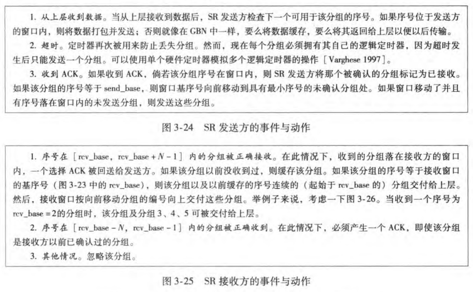

计网简答题
CH01
两种描述“因特网”的方式：
- 描述构成因特网的具体构成，包括基本硬件和软件组件；
- 描述为基础设施向分布式应用程序提供的服务。
两种最主要类型的分组交换机：
- 路由器 (routers)：用于核心网；
- 链路层交换机 (switches)：用于接入网。
套接字接口
一套发送程序必须遵循的规则集合，规定了运行在一个端系统上的应用程序如何请求因特网基础设施向运行在另一个端系统上的特定目的程序交付数据的方式。
网络协议 (network protocols)
协议定义了在两个或多个通信实体之间交换的报文格式和顺序，以及报文发送和接收及其他事件所采取的动作。
特点：
- 通信双方交换报文，而不是语句；
- 通信实体是设备。
网络结构的划分
- 网络边缘：主机/端系统、应用程序；
- 接入网络：将端系统物理连接到其边缘路由器的网络,有线或者无线通信链路。
- 网络核心：是由分组交换机和链路构成的网状网络。
接入网 (Access networks)
将端系统物理连接到其边缘路由器的网络。
- 边缘路由器：是端系统到任何远程端系统路径上的第一台路由器。
数据传输方式
电路交换：在端系统间通信过程中，创 建电路时就预留了端系统间沿路径通信所需要的全部资 源(缓存、链路传输速率)，并会话期间独占这些资源
- 频分复用(FDM):链路的频谱由跨该链路的所有连接共享，为每条经过的电路分配一个划分的子频段
- 时分复用（TDM）: 通信时间被划分为固定期间的帧，每个帧又被划分为固定数量的时隙，网络中 建立电路时在各段链路上的每个通信周期(时域)指定一个专用时隙，该时隙用于传输该电路连接的数据。
电路交换缺点:
- 电路交换因为在静默期（slient period）专用电路空闲导致浪费。
- 创建端到端的电路和预留资源是复杂的，需要复杂的信令和协 调沿路径的交换机操作
分组交换：将要传送的数据分成一个个单位（分组）。
- 分组从一个路由器传到相邻路由器（hop），一段段传输至目标端；
- 每段采用链路的最大传输能力（带宽）。
- 分组从一个路由器传到相邻路由器（hop），一段段传输至目标端；
分组交换 vs. 电路交换
- 分组交换网不适合实时服务(如电话和视频会议)，因为排队时 延导致端到端时延可变、不可预测。
- 分组交换网提供了比电路交换好的带宽共享,比电路交换更简单、 更有效、实现成本低
- 分组交换网适合于对突发式数据传输 :资源共享 , 简单，不必建立呼叫 但是过度使用会造成网络拥塞：分组延时和丢失,对可靠地数据传输需要协议来约束：拥塞控制
物理媒介
分类:
- 引导型
- 非引导型
双绞线:
- 两根绝缘的铜线以规则的螺旋状绞合起来，为减少临近类似 的双绞线的电气干扰
- 在一些特殊的环境下，如化工厂附近，使用外面包裹保护层 的屏蔽双绞线，但质地较硬，不利于布线。
- 大多数情况下，使用无屏蔽双绞线 UTP，广泛用于计算机网 络局域网组网中，灵活易布线，性价比高
同轴电缆
- 由于外层屏蔽层的作用，具有很好的抗干扰性，适于高速率传输
光纤
- 高传输速率
- 长距离传输，100km，光缆信号衰减极低，很难窃听
- 低误码率,不受电磁干扰
- 这些特性使其适用于长途引导型媒体，特别是跨海链路。
无线电信道
- 优点：穿墙、长距离、移动 连接
- 缺点：性能依赖于传播环境 和传播距离
- 同步卫星 近地卫星
分组交换
- 以分组为单位存储-转发方式
- 存储转发传输(store-and-forward transmission): 是指在分组交换机能够开始向输出链路传输该分组的第一个比特之前，必须 接收到整个分组
产生时延和分组丢失的原因:
- 分组到达链路的速率超过了链路输出的能力
- 分组等待排到队头被传输
最大吞吐量:一台路由器能够转发分组的最大速率
瓶颈链路:端到端路径上，限制端到端吞吐的链路
服务( Service)：低层实体向上层实体提供它们之间的通信的能力
服务与协议的区别 :
- 服务(Service)：低层实体向上层实体提供它们之间的通信的能力，是通过原语(primitive)来操作的，垂直
- 协议(protocol) ：对等层实体(peer entity)之间在相互通信的过程中，需要遵循的规则的集合，水平
服务与协议的联系 :
- 本层协议的实现要靠下层提供的服务来实现
- 本层实体通过协议为上层提供更高级的服务
分层的体系结构
- 网络设计者以分层的方式组织协议，以及实现协议的网络硬件和软件:
- 每一层向它的上一层提供服务（service）。
- 每层通过执行该层的某些动作或直接使用下层服务来提供服务。
- 一个协议层能够使用软件、硬件或两者的结合来实现。
- 应用层协议几乎用软件实现；
- 物理层、数据链路层协议通常在网络接口卡(硬件)实现;
- 网络层协议通常由软、硬件混合实现.
- 第n层协议分布在网络的端系统、分组交换机和其它组件
分层的原因:
- 结构化分层易于定义和实现
- 模块化,易于维护和升级
分层的潜在缺点：
- 功能可能在多层冗余，如差错检验；
- 某层功能可能调用其它层提供的信息，分层不彻底.
| 协议 | 任务 | 信息单位 | |
|---|---|---|---|
| 应用层 | HTTP SMTP FTP DNS | 端系统之间 | 报文 |
| 传输层 | TCP UDP | 应用程序端点之间传送应用层报文 | 报文段 |
| 网络层 | IP 路由选择协议 | 主机之间 | 数据报 |
| 链路层 | 链路层协议 DOCSIS PPP | 整个帧从一个节点到下一个节点 | 帧 |
| 物理层 | 与实际传输媒体相关 | 一个个比特从一个节点到下一个节点 | 比特 |
CH02 应用层
1. 客户-服务器体系结构
- 服务器：
- 一直运行；
- 固定的IP地址和周知的端口号；
- 可扩展性：通过服务器场或数据中心进行扩展，但扩展性差。
- 一直运行；
- 客户端：
- 主动与服务器通信；
- 与互联网有间歇性的连接；
- 可能使用动态IP地址；
- 不直接与其它客户端通信。
- 主动与服务器通信；
2. P2P结构
- 无需一直运行的服务器；
- 任意端系统之间可以通信；
- 每个节点既是客户端又是服务器；
- 新节点带来服务能力同时也增加服务请求；
- 主机连接间歇性且IP地址可能变化；
- 难以管理，面临安全性、性能、可靠性挑战。
3. 应用程序开发者控制范围
- 应用层端：对套接字的所有控制；
- 传输层端：仅限于：
- 选择传输层协议；
- 设置最大缓存和报文长度等参数。
- 选择传输层协议；
4. 应用层协议总结
| 应用层协议 | 传输层协议 | 备注 |
|---|---|---|
| HTTP | TCP 默认持久连接 | ASCII码 |
| SMTP | TCP 持久连接 | 7位 ASCII码 |
| DNS | UDP |
5. HTTP连接类型对比
- 非持续连接：
- 一个对象对应一个TCP连接；
- 下载多个对象需要多个TCP连接；
- HTTP/1.0 使用非持久连接。
- 一个对象对应一个TCP连接；
- 持续连接：
- 多个对象在一个TCP连接上传输；
- HTTP/1.1 默认使用持续连接。
- 多个对象在一个TCP连接上传输；
HTTP 默认使用持续连接，可配置为非持续连接。
6. 使用Web缓存的原因
- 降低客户端的请求响应时间；
- 减少机构内部网络与Internet接入链路上的流量；
- 互联网广泛采用缓存，使较弱的ICP也能有效提供内容。
7. SMTP VS HTTP
- HTTP：拉取 (pull)
- SMTP：推送 (push)
- 二者均为ASCII形式的命令/响应交互，带有状态码；
- HTTP：每个对象封装在各自响应报文中；
- SMTP：多个对象包含在一个报文中。
8. DNS提供的服务
- 主机名到IP地址的转换；
- 主机别名 (Host aliasing)：映射 alias names 到规范主机名或IP；
- 邮件服务器别名 (Mail server aliasing)：映射邮件服务器别名到规范主机名或IP；
- 负载均衡 (Load distribution)：DNS服务器响应IP集合并循环排列以分散请求。
9. 分布式DNS设计的原因
- 单点故障：集中服务器宕机会导致因特网瘫痪；
- 通信容量：单个DNS服务器无法处理所有查询；
- 远距离通信：存在时延、拥塞问题；
- 维护困难：中央数据库过于庞大且需频繁更新。
10. DNS层次数据库
- 根服务器：提供TLD服务器的IP地址；
- 顶级域 (TLD) DNS服务器：提供权威DNS服务器的IP地址；
- 权威DNS服务器：存储公共可访问主机的DNS记录，映射主机名到IP。
- 用户代理：允许用户阅读、回复、转发、保存和撰写报文。
- 邮件服务器：发送和接收邮件，同时还要向发件人报告邮件传送的结果。
- 简单邮件传输协议：是一个推协议，用在发送方邮件服务器和接收方服务器之间。
- 过程：从发送方的用户代理开始，传输到发送方的邮件服务器，再传输到接收方的邮件服务器，然后在这里被分发到接收方的邮箱中。
- 原因
- 大大减少对客户请求的响应时间
- 大大减少一个机构的接入链路到因特网的通信量，降低费用
- 大大减低因特网上的 Web 流量，改善了所有应用的性能
- 工作步骤
- 浏览器发送到 Web 缓存器的 TCP 连接，并发送一个 HTTP 请求
- Web 缓存器检查是否存储本地对象副本，如果有，则用 HTTP 响应返回对象
- 如果没有对象，则打开与对象初始服务器的 TCP 连接，发送 HTTP 请求，初始服务器收到请求之后返回对象
- Web 缓存器收到对象之后在本地存储空间存储一份副本，同时保存最后修改日期 Last-Modified首部行，向客户浏览器用 HTTP 响应返回对象副本。
主机向本地 DNS 服务器查询，如果主机所询问的本地 DNS 服务器不知道被查询的域名的 IP 地址，那么本地域名服务器就以DNS客户的身份，向根 DNS 服务器继续发出查询请求报文，而不是让主机自己进行下一步查询。根 DNS 服务器也不知道被查询的域名的 IP 地址，作为 DNS 客户向 TLD DNS 服务器继续发送查询请求报文。TLD DNS 服务器继续向权威 DNS 服务器发送查询报文，获得查询域名的 IP 地址之后，依次返回 TLD DNS 服务器，根 DNS 服务器，本地 DNS 服务器，最后返回请求主机。
请求主机与本地 DNS 服务器之间是递归查询，其他交互都是迭代查询。请求主机首先向它的本地 DNS 服务器发送一个 DNS 查询报文。该查询报文含有被转换的主机名。本地 DNS 服务器将该报文转发到根 DNS 服务器。该根 DNS 服务器向本地 DNS 服务器返回相应 TLD 的 IP 地址列表。本地 DNS 服务器再次向这些 TLD 服务器之一发送查询报文。TLD 服务器用权威 DNS 服务器的 IP 地址响应。最后，本地 DNS 服务器直接向该权威 DNS 服务器重发查询报文，权威 DNS 服务器用目标主机 IP 地址响应。
CH03 传输层
1.传输层的作用
- 传输层为运行在不同主机上的应用进程提供逻辑通信。
- 将网络层在两个端系统之间的交付服务扩展到运行在 两个不同端系统上的应用层进程之间的交付服务。
- 并解决两个对等通信实体如何在尽力而为（会丢失或 损坏数据）的因特网上进行可靠的通信。
传输协议运行在端系统
多路分解与多路复用 : 将由网络层提供的主机到主机的交付服务延伸到运行在主机上的应用程序,提供进程到进程的交付服务
- 在发送方主机多路复用:从多个套接字接收来自多个进程的报文，根据套接字对应的IP地址和端口号等信息对报文段用头部加以封装 (该头部信息用于以后的解复用)
- 在接收方主机多路解复用:根据报文段的头部信息中的IP地址和端口号将接收到的报文段发给正确的套接字(和对应的应用进程)
多路复用工作原理
- 主机收到IP数据报
- 每个数据报有源IP地址和目标IP地址
- 每个数据报承载一个传输层报文段
- 每个报文段有一个源端口号和 目标端口号 (特定应用有著名的端口号)
- 主机联合使用IP地址和端口号将报 文段发送给合适的套接字
为什么要有UDP?
- 不建立连接 （会增加延时 ）
- 简单：在发送端和接收端没有连接状态
- 报文段的头部很小(开销小)
- 无拥塞控制和流量控制： UDP可以尽可能快的发送报文段
- 应用->传输的速率= 主机->网络的速率
为什么UDP提供了差错检验，而有些链路层协议也提供了差错检验功能？
- 不能确保源端和目的端之间所有的链路都提供差错检验。
- 不能确保报文段在某个路由器内存中存储时不出错。
- UDP提供差错检验，但对差错没有恢复功能。
通用的流水线协议,根据差错的恢复方式不同:
回退N步(GBN):全部重传 累计确认
选择重传(SR): 选择重传 单独确认
GBD优缺点:优缺点
优点:
- 接收方简单，不需要缓存任何失序的数据片，不需 要设置缓存。
缺点：
- 发送方需要设置缓存已发送但未确认的数据片，并维护 窗口的上下边界和nextseqnum。
- 由于失序而丢弃一个正确的数据片后，随后可能需要更 多的重传，包括之前删除的正确的失序数据片。
- 当窗口长度和带宽时延积很大时，单个数据片的错误就 能引起GBN重传大量数据片！导致传输效率大大降低
GBN vs. SR
| GBN | SR | |
|---|---|---|
| 发送窗口大小 | (1,2k−1] | (1,2k−1] |
| 接收窗口大小 | =1,接收方只能顺序接收 发送方:一旦一个分组没有发成功， 如：0,1,2,3,4 ; 假如1未成功，234都发送出去 了，要返回1再发送；GB1 | >1,接收方可以乱序接收 发送方发送0,1,2,3,4， 一旦1未成功，2,3,4,已发送， 无需重 发，选择性发送1 |
| 确认 | 累计确认 | 选择确认 |
| 定时器 | 发送端拥有对最老的未确认分组的定时器 当定时器到时时，重 传所有未确认分组 | 发送方为每个未确认的分组保持一个定时器 当超时定时器到时，只是 重发到时的未确认分组 |

第一步：客户端的
TCP首先向服务器端的TCP发送一个SYN报文段。该报文段中不包含应用层数据，但在首部中设置 SYN 标志位为1，随机选择一个初始序号client_isn放置在报文段的序号字段中。该报文段被封装在一个IP数据报中发送给服务器第二步：服务器提取出
SYN报文段，分配缓存和变量，向客户TCP发送SYNACK报文段。在首部中设置SYN标志为1，确认号设置为client_isn + 1，选择初始序号server_isn设置到序号字段中第三步：客户收到
SYNACK报文段之后，分配缓存和变量，发送报文，对服务器的允许连接报文段进行确认。因为链接已建立了，设置 SYN 标志为 0三次握手才可以阻止重复历史连接的初始化（主要原因）而两次握手会存在这个问题
三次握手才可以同步双方的初始序列号 两次握手只保证了一方的初始序列号能被对方成功接收，没办法保证双方的初始序列号都能被确认接收。
三次握手才可以避免资源浪费 两次握手会造成消息滞留情况下，服务器重复接受无用的连接请求
SYN报文，而造成重复分配资源。
TCP与UDP的区别
TCP是面向连接的，UDP是无连接的 TCP是可靠的，UDP是不可靠的 TCP是面向字节流的，UDP是面向数据报文的 TCP只支持点对点通信，UDP支持一对一，一对多，多对多 TCP报文首部20个字节，UDP首部8个字节 TCP有拥塞控制机制，UDP没有 TCP协议下双方发送接受缓冲区都有，UDP并无实际意义上的发送缓冲区，但是存在接受缓冲区

作用：标识一台主机上的应用进程
位数长度：16 比特
周知端口号：0 — 1023 全局分配（静态分配）
周知端口号的作用：固定保留分配给诸如 HTTP 和 FTP 之类的周知应用层协议来使用
自由端口号：1024 — 65535
管理及分配方式：本地分配（动态连接）。这些端口号一般不固定分配给某个服务，也就是说许多服务都可以使用这些端口。只要运行的程序向系统提出访问网络的申请，那么系统就可以从这些端口号中分配一个供该程序使用。即进程需要访问传输层服务时，向本地操作系统提出申请，操作系统返回本地唯一的端口号，进程再通过合适的系统调用，将自己和该端口连接起来（绑定）


超时触发重传存在的问题之一是超时周期可能相对较长。当一个报文段丢失时, 这种长超时周期迫使发送方延迟重传丢失的分组，因而增加了端到端时延。解决方法便是快速重传,如果TCP发送方接收到对相同数据的3个冗余ACK,它 把这当作一种指示，说明跟在这个已被确认过3次的报文段之后的报文段已经丢失。一旦收到3个冗余ACK, TCP就执行快速重传,即 在该报文段的定时器过期之前重传丢失的报文段。
流量控制：是一个速度匹配服务，使得发送方速率与接收方速率向匹配， 不至于导致接收方缓存溢出
拥塞控制：因IP网络拥塞而限制发送方的发送速率。